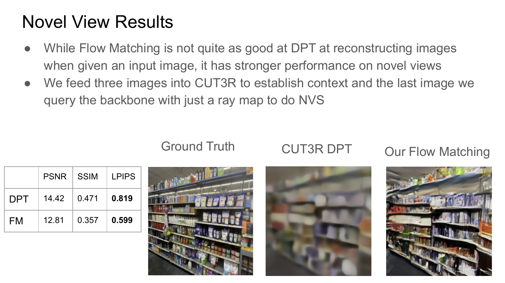
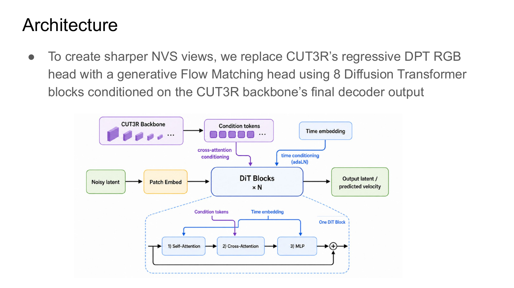
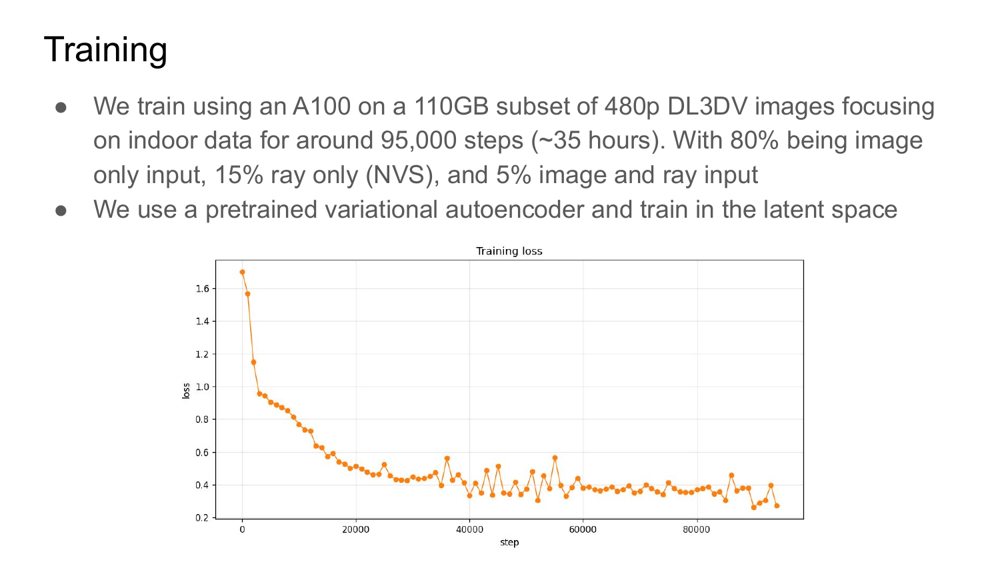
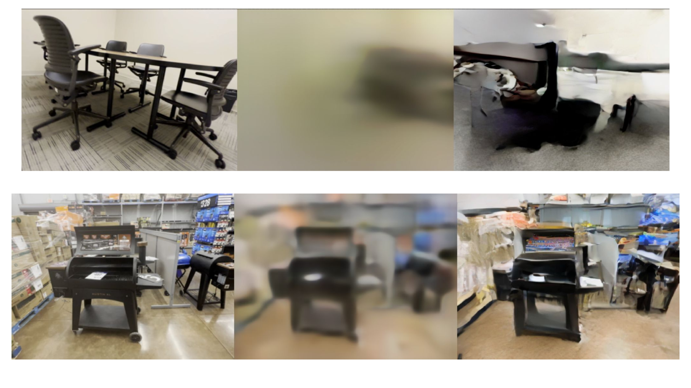
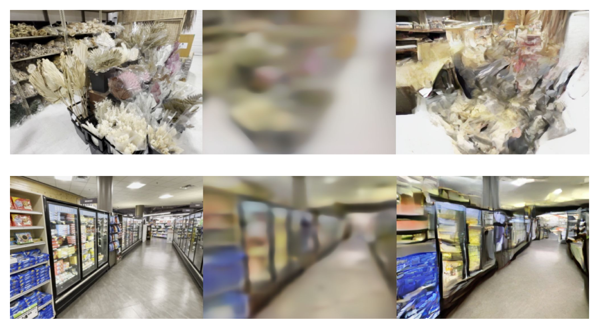
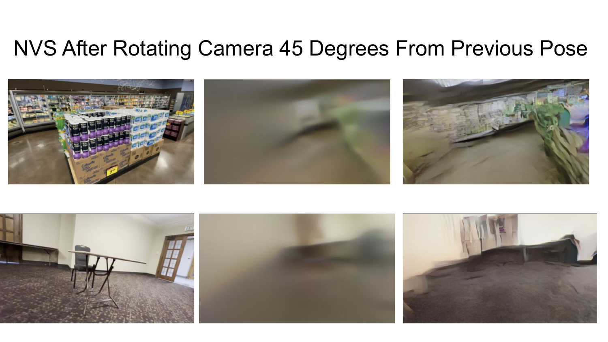

CS280 · UC Berkeley · 2025
UC Berkeley


We build on the persistent-state 3D reconstruction framework of CUT3R to improve novel-view appearance prediction. While CUT3R produces accurate geometry and supports querying unseen viewpoints via raymaps, it relies on a deterministic regression head for RGB prediction, which leads to low-quality outputs in unseen regions. We replace this deterministic color head with a conditional generative head trained using Flow Matching to produce visually sharper and more plausible novel-view appearances in ambiguous regions, while accepting weaker pixel-level fidelity than the baseline.
CUT3R maintains a recurrent latent scene state updated from a stream of input images. It uses Dense Prediction Transformer (DPT) heads to predict depth, RGB, and camera pose. For novel view synthesis (NVS), it queries the backbone with a raymap and decodes an RGB prediction. The deterministic regression head averages over all plausible appearances, producing blurry results in ambiguous regions.
We freeze the CUT3R backbone entirely and replace only the RGB color head with a generative head (Headgen) trained via Flow Matching. Headgen is implemented as a Diffusion Transformer (DiT) with 8 blocks. The query-conditioned CUT3R features F'r condition the DiT via cross-attention. A time embedding is injected into each residual block via adaLN. The network learns a velocity field over a linear probability path from Gaussian noise to the target RGB image, and at inference time we solve the corresponding ODE with 20 Euler steps.
We train on a 110 GB indoor subset of DL3DV-10K (1,558 scenes at 480p), using a single NVIDIA A100 80GB for approximately 100,000 optimizer steps (~35 hours). Each sequence samples N=4 views; 80% of non-anchor views are image reconstruction tasks, 15% are NVS-only (ray query), and 5% use both. We use a pretrained variational autoencoder and train in latent space. Classifier-free guidance (w=2) is applied at inference.

We evaluate on 50 held-out DL3DV-10K scenes. Higher PSNR and SSIM are better; lower LPIPS is better. Our generative head trades pixel-level fidelity (PSNR, SSIM) for sharper, more perceptually plausible outputs, reflected in improved LPIPS on novel view synthesis.
| Method | PSNR ↑ | SSIM ↑ | LPIPS ↓ |
|---|---|---|---|
| Image Reconstruction | |||
| CUT3R DPT (Baseline) | 36.05 | 0.9699 | 0.0468 |
| Ours, 8 DiT blocks | 29.26 | 0.8883 | 0.1213 |
| Novel View Synthesis | |||
| CUT3R DPT (Baseline) | 14.31 | 0.5192 | 0.8208 |
| Ours, 8 DiT blocks | 12.25 | 0.3950 | 0.6423 |
We also trained a larger 12-block variant designed exclusively for novel view synthesis, queried only with ray maps and never with ground-truth images. This model explores a different point in the design space: rather than balancing reconstruction and synthesis, it focuses entirely on generating plausible novel views from the accumulated scene state.
| Method | PSNR ↑ | SSIM ↑ | LPIPS ↓ |
|---|---|---|---|
| Novel View Synthesis | |||
| CUT3R DPT (Baseline) | 14.31 | 0.5192 | 0.8208 |
| Ours, 8 DiT blocks | 12.25 | 0.3950 | 0.6423 |
| Ours, 12 DiT blocks (NVS-only) | 12.23 | 0.4181 | 0.5729 |
The 12-block NVS-only model achieves the best LPIPS across all methods, suggesting that specializing for perceptual quality on novel views is a productive direction with more compute and data.
Three-way comparison: ground truth (left), CUT3R DPT regression baseline (middle), and our Flow Matching head (right). The baseline collapses plausible appearances into a single blurry mean; our method preserves detail and structure.


We query the model for a novel view 45° off the last observed camera pose, a challenging setting with high ambiguity. The DPT head predicts a heavy blur of the previous frame's dominant color; our generative head attempts a plausible scene continuation.

We demonstrate that replacing CUT3R's deterministic RGB head with a Flow Matching generative head produces visually sharper and perceptually more similar novel views, as measured by LPIPS, while trailing the baseline on pixel-level metrics (PSNR, SSIM). This confirms the expected trade-off: regression models minimize pixel error by averaging over plausible appearances, while generative models sample a specific plausible appearance.
Our results are constrained by a limited compute budget (single A100, 35 hours) and a training subset of 110 GB from DL3DV-10K. We expect that scaling the model, data, and training steps would bring image reconstruction quality in line with the regression baseline while extending the generative advantage on novel views. A more promising direction may be a mixed architecture that applies a generative head selectively for ambiguous NVS queries while retaining regression for reconstruction.
If you find this work useful, please cite: